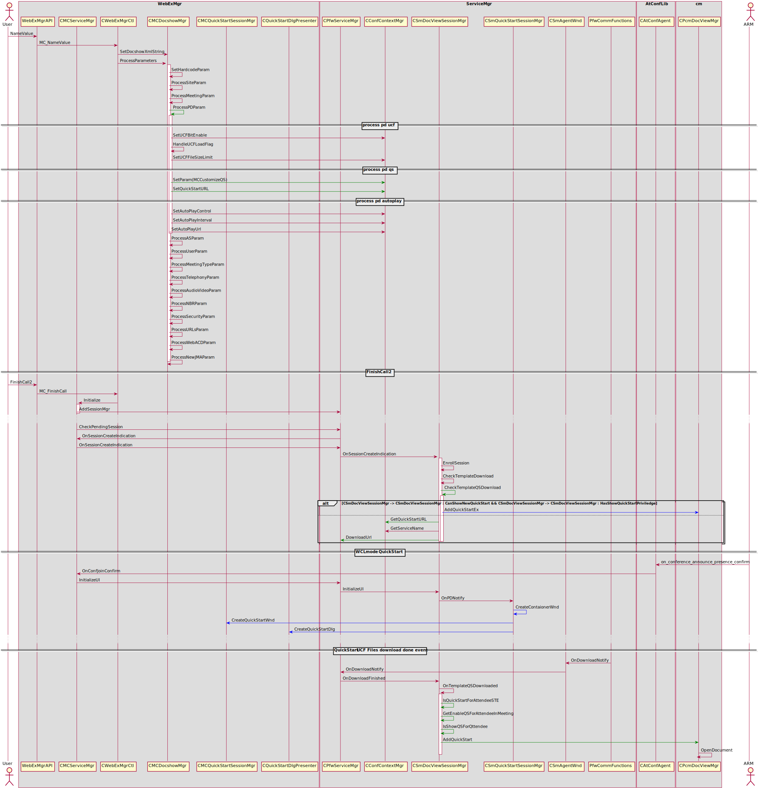

Anyone can share¶
Sequence for QuickStart¶
Sequence for QuickStart
Sequence for AS SwitchTo DS¶
Here will show you how switch to DS from AS
Where to enable anyone can share¶
- [Participant can grab presenter role] and [End-to-End] options in superadmin
- [Allow Participants to Share in meetings (MC only)] in siteadmin options
- webex.ini
- clientparam
- MeetingType
- SiteConfigExt & 0x20000
ServiceMgr Anyone can share CConfContextMgr¶
- SetEnableParticipantGrabPresenter
- GetEnableParticipantGrabPresenter
- $EnableParticipantGrabPresenter
CMCFeatureMgr¶
CanMakeMePresenter
MakeMePresenter
QueryMakePresenter
MakePresenterDirectly
- CPfwServiceMgr::SetUserAsPresenter
- CAtConfManager::SetUserAsPresenter
- GCC_Provider_Secu::presentor_assign_request
Be make me presenter¶
- g_pMCServiceMgr->m_mcFeatureMgr.CanMakeMePresenter()
- && ((g_pMCServiceMgr->m_Info.dwBitFlag & BIT_FLAG_ANYONE_CAN_SHARE) != BIT_FLAG_ANYONE_CAN_SHARE_DISABLE)
Be Any one share¶
- g_pMCServiceMgr->m_mcFeatureMgr.CanMakeMePresenter()
- && ((g_pMCServiceMgr->m_Info.dwBitFlag & BIT_FLAG_ANYONE_CAN_SHARE) != BIT_FLAG_ANYONE_CAN_SHARE_DISABLE)
- && (CSmFeatureMgr::MP_MODE_ANYONE_CAN_SHARE)
Quick Start With UCF template Key Point¶
Docshow customized Quick Start
- QSCustomizedFlag
- QSMD5
- QSURL
CMCDocshowMgr::ProcessPDParam
CConfContextMgr::SetParam(“MCCustomizeQS”)
CConfContextMgr::SetQuickStartURL()
QS_ITEM_SHARE_APP_ICON
QS_ITEM_SHARE_DOC
CSmDocViewSessionMgr::CheckQSStatus
CMCQuickStartSessionMgr::CheckQSStatus
CSmQuickStartSessionMgr::CanShowNewQuickStart
CSmDocViewSessionMgr::ShowQSForAttendee
CSmDocViewSessionMgr::SetEnableQsForAttendeeInMeeting
CSmDocViewSessionMgr::OnQsAppShare
MP_MODE_ANYONE_CAN_SHARE
CSmDocViewSessionMgr::OnQSNoPrivilege
CMCDocViewSessionMgr::OnTemplateQSDownload
- CSmDocViewSessionMgr::IsQuickStartForAttendeeSTE
- CSmDocViewSessionMgr::GetEnableQSForAttendeeInMeeting
- CSmDocViewSessionMgr::IsShowQSForAttendee
- CPcmDocViewMgr::AddQuickStart